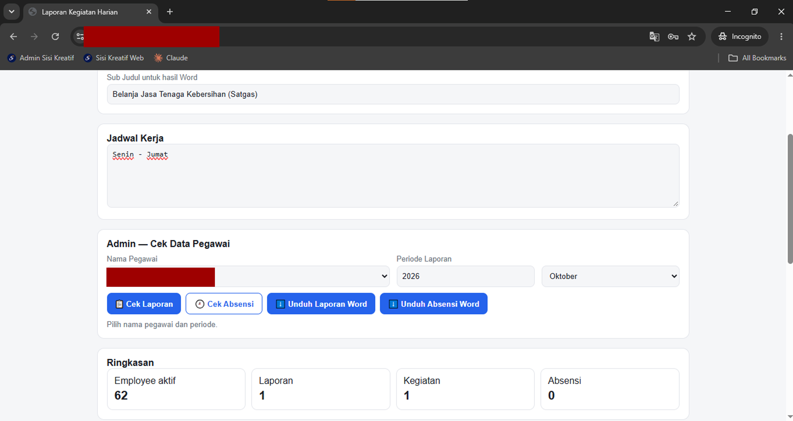
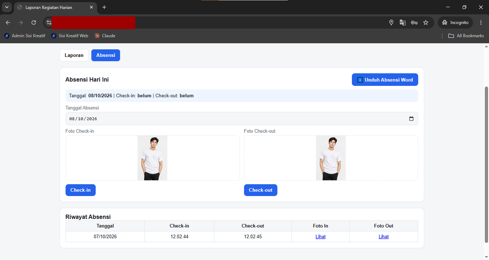
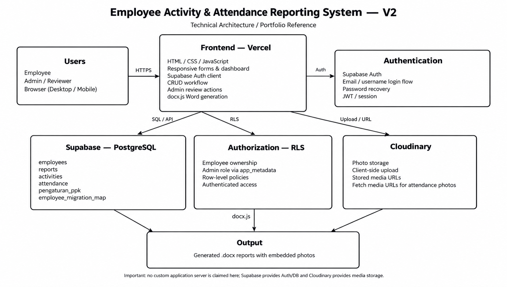

The existing workflow
Employees submitted activity and attendance information through a repetitive manual process. Administration then had to collect, organize, document, and prepare monthly reports.
CASE STUDY / 01
A web application built to replace a manual monthly activity and attendance reporting workflow with structured digital submission and review, controlled access, media storage, and automated Word output.
Employees submitted activity and attendance information through a repetitive manual process. Administration then had to collect, organize, document, and prepare monthly reports.
A web application where employees submit records and administrators can review, approve, or request revisions, while media and final Word documents are handled digitally.
03 / BEFORE → AFTER
04 / HOW IT WORKS
Login, select month, add activities and attendance with supporting photos, review, and submit.
Login, open the monthly dashboard, review submitted reports, approve them, or return them for revision.
Structured activity and attendance data can be transformed into a templated Word document.
05 / KEY FEATURES
06 / SCREENSHOTS
Use this section to show the actual interface. The first image can be a real login screenshot; the remaining marked images are ready for your own redacted screenshots.






07 / TECHNICAL ARCHITECTURE

HTML, CSS, and JavaScript provide the responsive interface, forms, CRUD workflow, admin actions, and Word generation integration.
Supabase/PostgreSQL stores application data; authentication identifies users and RLS supports ownership-based authorization and administrative access.
Cloudinary handles activity and attendance photo storage, while docx.js is used for automated Word document generation.
08 / MY ROLE
I defined the operational workflow, application requirements, user roles, UI structure, data needs, and expected document output. I used AI as a development assistant for implementation, debugging, iteration, and documentation.
09 / DEVELOPMENT APPROACH
My technical foundation started with HTML, CSS, and JavaScript. I expanded through hands-on development while working from an actual administrative reporting workflow.
AI was used as a development assistant to help translate requirements into implementation, troubleshoot issues, iterate on the application, and document the system.
10 / WHAT I LEARNED
Turning a recurring administrative process into a sequence of digital actions, roles, and review states.
Understanding how frontend, authentication, database, access control, media storage, and document output fit together.
Using AI-assisted development as a tool while learning through implementation, debugging, and repeated testing.
11 / LINKS
Before publishing, verify the live application URL and add the real GitHub repository link if you want to expose the source code.